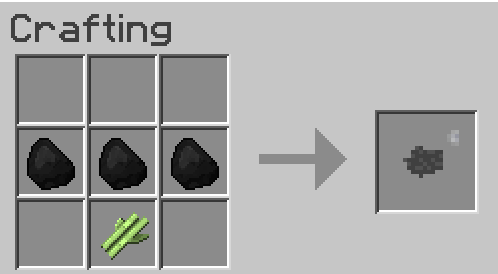
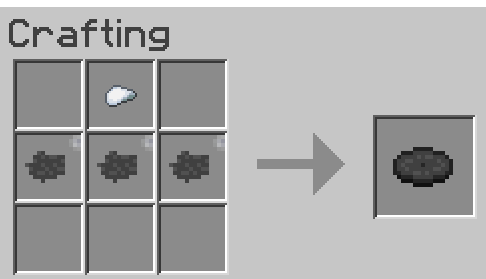

Craftable Discs - Minecraft Mod
This mod allows you to craft music discs in Minecraft.
How to install:
- Install Forge 1.12.2
- Download the mod
here
- Put it in the folder C:/Users/your-profile-name/AppData/Roaming/.minecraft/mods
- Run Forge in the Minecraft launcher, & hope it doesn't crash
Recipes
Vinyl

Disc blank
